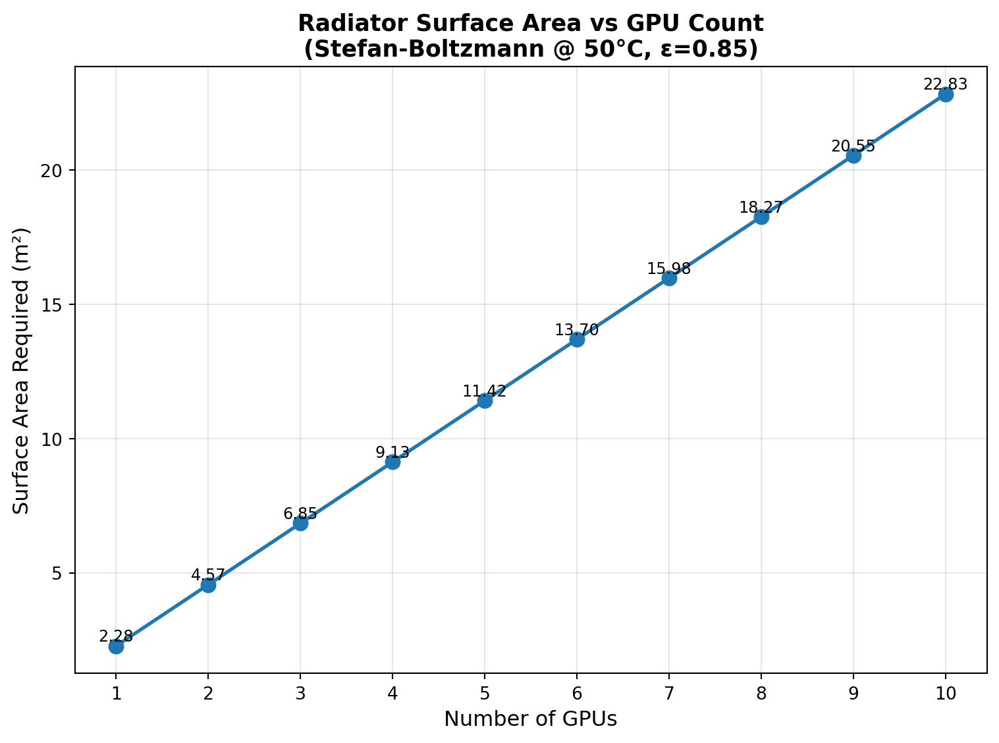
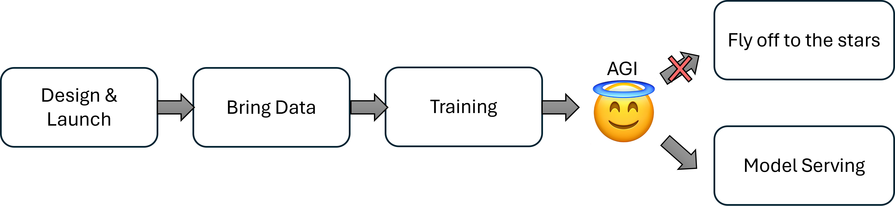
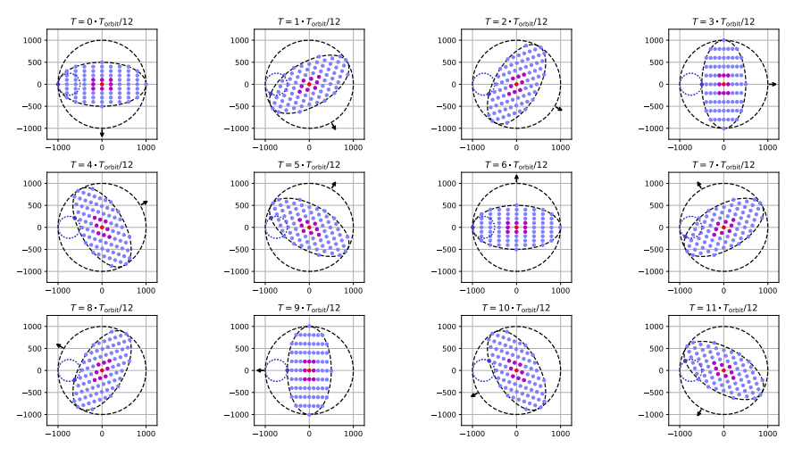
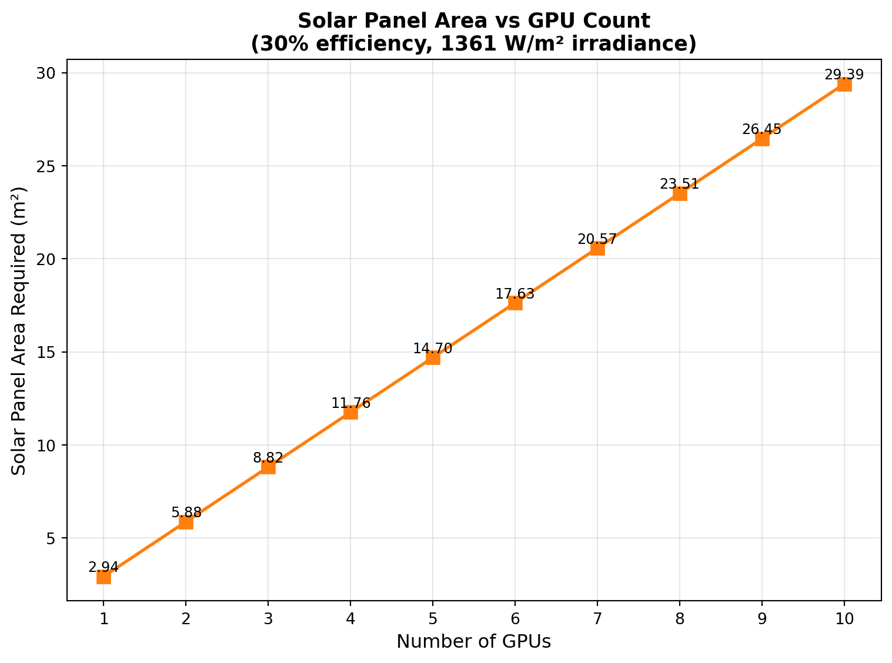

Orbital Data Centres: Mission Analysis
Adroitly
Mission Analysis
Has the AI hype train achieved escape velocity? An analysis of SpaceX’s orbital data centre for AGI training
Introduction
On 30th January 2026, SpaceX filed plans for an orbital data centre constellation for a whopping one million satellites in Low Earth Orbit (LEO). The very next working day, SpaceX announced its acquisition of xAI, the company behind Grok. Elon is assembling his Avengers, but for what?
In Elon’s announcement on the SpaceX website, he believes that the continuously available solar power in LEO is the cost-effective way to get to Artificial General Intelligence (AGI). An all-knowing entity up in the sky? Talk about creating a god; Brandon Sanderson could take a leaf out of Elon’s book.
There is much to say about the economics of the xAI acquisition with regards to the highly anticipated SpaceX IPO — we won’t dwell on this aspect, and instead refer you to this podcast.
Instead, in this post we will flesh out the mission concept for this ambitious undertaking from an engineering perspective. Through this exercise, we aim to cut through the hype and technically assess the feasibility of this endeavour.
Space Mission Analysis and Design
Space mission analysis is a comprehensive, multidisciplinary process that defines, designs, and optimizes satellite missions to achieve objectives while minimizing cost, risk, and technical challenges. In my experience, this typically involves many lines of codes and hundreds of pages of technical documentation to explore the trade-offs for different candidate designs.
We will attempt to fit all of that on the back of an envelope, to give a top-level “sensing” of this mission and avoid getting lost in the technical details.
Mission Phases
What does it take to get to AGI in space? We see 4 key phases of the mission:

- Design, Launch, and Deployment. The data centers need to be designed, launched into space, and establish connectivity with each other and the xAI engineers on the ground.
- Bring Your Own Data. The training data needs to be accessible by the data centers to begin training. This deserves its own phase of the mission, with interesting challenges and multiple candidate solutions.
- Training. This phase encompasses all training stages: pre-training, fine-tuning, and reinforcement learning with human feedback.
- Model Serving. Assuming AGI has been created, remains subservient (and did not just take control and fly off to the stars), there are now networking challenges to dispense its infinite wisdom to the world.
Phase 1: Design, Launch, and Deployment
What orbital regime?
With SpaceX’s fleet of rockets, access to a launch vehicle and most orbital regimes is a non-issue. To leverage the network connectivity of the Starlink constellation, placing the data centre compute at a similar altitude is preferable as well, in LEO (~500km).
How many GPUs?
There aren’t many definitive sources on this, so we will proceed with a comparative analysis. Grok-4 was trained in the Colossus data centre with 200,000 H100 GPUs. Let’s assume that the huge step from current models into true AGI can be achieved with the same number of GPUs, and upgrade the H100 to B200. This represents a 2x to 3x increase in training performance.
One Mega-Satellite, or Many Satellites?
GPUs need to be housed snugly into a satellite bus, which provides electrical power, thermal regulation, and networking. At the limit, one GPU could be packed into one small-satellite. This might not be desirable as there are overheads incurred per satellite - one more set of attitude control subsystem, one more set of communication links, etc.. On the other extreme, all 200,000 GPUs could be placed into a single monolithic structure (i.e. “a Colossus in orbit”).
In practice, launching a monolithic structure is impractical - Starship is the largest SpaceX rocket and has useable dimensions of 400m^3, while the dimensions of the 200,000 GPUs alone is approximately 38,400m^3 (without supporting satellite bus subsystems).
So realistically, our orbital data centre will be launched in the form of many small satellites with intensive data networking.
Satellite Constellation Architecture
How should we configure this satellite formation? The main technical challenge is finding an architecture that enables high speed communication between the GPUs across satellites.
Lets draw inspiration from Google’s Project Suncatcher, and Starcloud.
Project Suncatcher - Formation Flying Fantasies
Project Suncatcher is Google research project evaluating its version of orbital data centres. The report proposes a constellation of 81 satellites packed into a rotating circular plane 1km in diameter. The short distances between satellites allow for high inter-satellite networking speeds, and the distributed constellation architecture allows for easy scaling and replacement.
The satellite formation is maintained with minimal need for propulsion, exploiting the J2-term in Earth gravitational field (explainer: the Earth is “fatter” about the equator. You are further away from Earth’s centre, and centrifugal force is reduced, making you weigh less and allowing you to eat more guilt-free. Incidentally, this “disturbance in the force” perturbs satellites orbits in a predictable manner, which Google exploits in Suncatcher’s orbit design.)

Project Suncatcher also studied intersatellite networking technology - while Starlink’s Optical Inter Satellite Links are capable of 100Gbps speeds, terrestrial data centre Infiniband NDR technology is at 400Gbps, with upcoming XDR technology doubling to 800Gbps (i.e. 8x Starlink speeds). In order to get to juicy 800Gbps speeds, Google leveraged the higher Signal-to-Noise Ratios enjoyed at short inter-satellite distances, employing Commercial Off-The-Shelf (COTS) Dense Wavelength Division Multiplexing (DWDM) transceiver technology, similar to that used in terrestrial data centres.
Starcloud - Big Backbones
Starcloud is the current market leader in the orbital data centre race, having launched its prototype mission in November 2025, comprising a single H100 GPU (we have a long way to go).
Starcloud proposes a different architecture - after satellites are launched into orbit, they physically plug into a physical structure that’s already in orbit. This physical structure provides the networking backbone for high data centre speeds, eliminating the need for tight orbit design and laser links.


How will the massive solar array and networking backbone get into orbit? 🤷
This approach avoids the challenges of intersatellite links and tight orbital formation, at the cost of conducting in-space assembly of a 4km megastructure. For context, the International Space Station is the largest manmade structure currently, at 109m. Yes, Starcloud could point to proven automated Rendezvous, Proximity Operations, and Docking (RPOD) techniques as justification. But what about the massive solar array? With today’s approaches, this implies some form of in-space assembly technology, or precision thrusters on solar panel segments to RPOD with each other. Another challenge: how to adjust orientation to keep the solar array oriented towards the Sun?
Taken as a whole, the “assemble small satellites into a monolith” approach faces more (and tougher) technical challenges. And if they succeed, you can be sure the astronomers will come complaining.
Putting GPUs into a Box - Satellite Packaging
We’ve talked about how satellites could potentially be configured around each other. But what about the design of each satellite? More importantly, how many GPUs can fit on a small satellite? There are several design aspects to consider:
Thermal
An Nvidia B200 draws 1200W of electrical power and will eventually be converted to heat. In the vacuum of space, there is no atmosphere to facilitate heat dispersal through conduction or convection (and also why no one can hear you scream). Radiation is the remaining means of heat dissipation, which is governed by Stefan-Boltzmann’s Law. For reference, Starlink Block v3 measures 7m x 3.5m = 24.5m^2 top panel area. But we should also note that there are many other heat generating modules in Starlink that need to radiate out through the same area, so adding 10 GPUs on a Starlink satellite requires approximately double the current surface area.
Power and Mechanical
The more GPUs are hosted per satellite, the more solar panels are required to generate the required electrical power. A related design parameter is the orbit - Dawn-Dusk Sun Synchronous Orbits are capable of getting constant Sun exposure at LEO altitudes, allowing for constant electrical power generation. While this suggests that batteries might not be needed, in reality, load balancing concerns might mean a small battery is still required.

For reference, Starcloud’s proposed 4km megastructure would generate approximately 6.5GW of power with the same calculations. Starcloud claims a 5GW data centre, which suggests that 1.5GW is budgeted for efficiency losses and non-workload, typical spacecraft tasks.
Large-area solar panels can cause a satellite to be ungainly and challenging to steer - in physics terminology, the Moment of Inertia grows. The intuition can be illustrated by imagining an ice skater spinning on the ice - to slow her rotation, she extends her arms. Large solar panels are akin to extended arms, making it difficult for the satellite to orient itself to track the Sun.
Additionally, large solar panels need to be folded into a small, compact volume to fit into the rocket’s payload fairing. The larger the solar panels, the more folds are required, presenting more mechanical challenges in securing the panels during launch, and stiffening the deployed panels in-orbit.
So… How Many Satellites Again?
There are many feasible solutions, which have to account for the Thermal, Power, and Mechanical considerations stated above. Handwaving-ly, we can assume that for cost effectiveness the satellite would be built on a modified Starlink assembly line and take its approximate dimensions and solar power generation (currently ~3000W). That amounts to 2 B200 GPUs, which conveniently fits the GB200 Superchip (up to 2700W).
This suggests the orbital data centre will be made up of 200,000 / 2 = 100,000 satellites. Wow.
Referencing Google’s Project Suncatcher again - recall that meter-level distances were required to achieve the intersatellite link speeds required for data centre link speeds. With 100,000 satellites, networking might resurface as a technical challenge. If anyone can do it, SpaceX can.
Honourable Mention - Radiation
While this section is primarily focused on estimating the number of satellites by counting how many GPUs can fit on a single satellite, there is another practical consideration that we will briefly mention - the chip fabrication process affects its survivability in Low Earth Orbit’s radiation environment. Today’s typical space-grade chips use transistors made on the 20nm process, while Nvidia’s B200 are made on TSMC’s 4nm process. The smaller the process node, the more susceptible the chip’s operations become to radiation effects. Project Suncatcher performed a more in-depth study on this aspect if you’re interested.
Phase 2 - Bring Your Own Data
At this point, we’ve finally got our satellite constellation up into orbit. In this section, lets talk about the data.
How Much Data?
We will limit our discussion to data that is need to train AGI. As the scaling law suggests, that’s basically all the data. Experts might quibble about synthetic data generation, data selectivity and quality, but let’s assume bringing “The Global Datasphere” up into orbit as a starting point. This is defined as all digital data (text, video, etc.) created, which is currently estimated at 175 zettabytes = 175,000,000,000 TB.
Amazon offers data centre migration services in the form of a tricked out compute + harddrive called the Amazon Snowball at 210 TB. That makes the datasphere equivalent to 833,333,333 Snowballs. Phew.
In practice, some selectivity is probably needed, reducing the data size. It’s challenging to define a realistic number for this, so let’s proceed and treat this as a worst case scenario.

The Initial Setup: Getting the Datasphere into Orbit
Taking cue from Amazon, large dataset migration on-ground is accomplished physically. Given the large ground-to-orbit distances attenuating communication bandwidth (more on this later), it is likely data will be physically launched into orbit as well.
Distributing our 833,333,333 Snowballs across 100,000 satellites means approximately 8333 Snowballs per satellite. The data would weigh 187 tons per satellite, which is clearly unreasonable.
This suggests that on top of “compute” satellites, we will now have to contend with dedicated “data” satellites that supplement the data storage needs of AGI training.
We still need Ground-Space Communication
Even if SpaceX has the capability to launch such quantities of satellites at a high cadence, the datasphere is only going to grow larger. Furthermore, there are will be continually updated datasets to train a new version of the AGI, or for post-training. While not on the zettabyte scale, we’re still in terrabyte or petabyte territory. That’s where Ground-Space communication links come into play.
There are two main communication modes to consider: Radio Frequency (RF) and Optical (i.e. Laser).
There are two challenges to overcome: distance, and the atmosphere.
RF versus Laser Comms
Data rate. At a fundamental level, data rate is constrained by Shannon-Hartley’s Theorem,
\[ C \propto B \]
The channel capacity (bits per second) is proportional to the bandwidth of the channel (Hz), for a given Signal to Noise Ratio. Laser links have bandwidths on the order of THz, while RF bandwidths are on the order of GHz. Laser wins, theoretically. Starlink uses RF communication in the Ku-band up to 100Mbps, while NASA’s TBIRD has demonstrated laser communication speeds of up to 200Gbps.
Atmospheric Effects. Rain and clouds affect both RF and laser, but severely attenuates laser more. Typical ground to space laser communication demonstrations have required clear skies. RF communications can operate in gloomier weather, making it more operationally robust.
Project Loon: A Robust Hybrid Solution
Google’s Project Loon utilised a hybrid solution. The key insight was that much of atmospheric attenuation was experienced from sea-level up to 20km altitude (i.e. the stratosphere). A high-altitude balloon was stationed at 18km to 25km altitude. For robust communications, RF links were used down to the ground, while laser links were used for communication beyond the stratosphere.
The project was initially planned to bring connectivity to rural areas, but was sadly shut down due to the lack of interest.
In the AGI age, there is new need for very high speed ground to space links. As with hot air, hope may rise again.
Phase 3 - Training
Ok, so we’ve launched our data centre, and got our data in orbit. Our infrastructure and networking are in place. Now we are ready to train our model and build intelligence!
Let’s consider the training scenario in more detail: xAI engineers are seated at their desks in Palo Alto. The orbital data centre flies overhead. The engineers send the script to start the training run. The script is transferred via the newly reborn Elon x Google Loon, up to the data centre. The training run starts, and the orbital data centre continues on its orbit, passing over the North Pole. The engineers then pack up and go home, because the next time the data centre passes over Palo Alto is in 6 hours.
See the trick I played there? The engineers aren’t coming back in 6 hours because Micromanager Elon would have fired them for thumb twiddling!
Clearly, there is a missing piece of the puzzle here - engineers need constant contact with the orbital data centre to monitor training loss and debug issues round the clock. This is addressed with further networking.
This is where the massive might of Starlink comes into play. I was being disingenuous earlier by suggesting the Loon would be part of the training run; in practice Loons are likely required for Gbps transfer of large datasets (post-launch), while the Mbps speeds of the Starlink constellation is capable of providing constant communication of training telemetry and commands.
Phase 4 - Model Serving
In this phase, AGI has been achieved, and now we need to serve the god model. This essentially means maintaining high bandwidth communications with the orbiting data centre.
AGI Applications
To motivate the need for high bandwidth communications, let’s briefly discuss the promise of AGI. In the near term, AGI is expected to perform where current frontier models stutter - long horizon tasks, cross-domain knowledge synthesis and transfer for novel discoveries, and general decision making under uncertainty. These capabilities are easily applicable to many areas in science, robotics, and even business. Applications in these areas require high bandwidth communications to control equipment for drug discovery, to take video and other sensory inputs from robots and control them in real time, or to ingest large corpus of real time stock market and business news in order to make decisions. Compared to primarily text based inputs in today’s LLMs, a single instance of the AGI model would already require Gbps speeds (particularly for robot teleoperation); let alone multiple instances to serve customers across the world.
Starlink Could Be the Bottleneck
Thus far, there has been relaxed latency requirements for the ad-hoc data transfer phase and the training phase. However model serving for multimodal and robotics control applications would now demand low latency. Taking reference to terrestrial data centres, we are looking at Tbps speeds.
At 100Gbps per laser link, we are talking about 10+ dedicated links at any time to achieve Tbps on aggregate. For a data centre in LEO, this might be challenging - but reconfiguring Starlink orbits could be a simple solution.
Additionally, given our initial estimates of a 100,000 satellite data centre, the sheer physical area taken up by the data centre might be large enough to easily establish contact with enough Starlink satellites for the required Tbps speeds.
What About the Moon?
On 9 Feb 2026, Elon announced a shift in SpaceX’s focus from Mars to the Moon. This could be another argument for AGI in space - placing an AGI data centre at the Earth-Moon L1 Lagrange point could act as an autonomous Mission Control for rockets launched towards the Moon. The AGI at L1 could also supervise exploration and construction activities on the Moon.

Can We Utilise the Orbital Data Centre?
Assuming all the technical challenges have been overcome, the allure of an orbital data centre is the easy access to “free” power, from the Sun. Could the compute in space be used by us mere mortals to train our models more cheaply?
For terrestrial applications, the projected increase in power supply suggests that the boring approach of training your model in a terrestrial data centre might be getting cheaper in the near future. If you truly want to obtain that “Made in Space” bragging right, you’d have to send your data up into orbit through Loon and Starlink, and you can be sure that you’ll be sharing at least some of those infrastructure costs.
But if you are in the remote sensing / Earth observation business, data centres in orbit changes the game. Modern remote sensing satellites today spend R&D resources to build custom edge AI solutions to process data-heavy imagery/raw data onboard the satellite, in an effort to avoid the slow downlink speeds caused by atmospheric attenuation. With an orbiting data centres, a commercial laser link terminal is all you need to send your data for processing. By avoiding the limited hardware resources of an edge processor, more complex models can be used, improving performance.
Conclusion
In this article, we have traversed the Heavens and the Earth, and found engineering concepts to make the orbital data centre marginally feasible. The largest technical challenges appear in networking: ground to space, and between data centre elements in space. If any company can overcome these challenges, it would be the company that operates 65% of all active satellites in orbit.